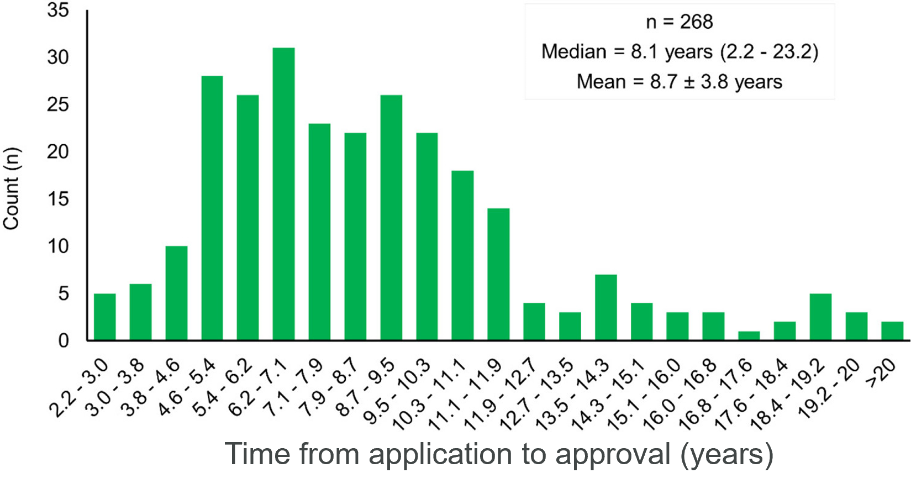
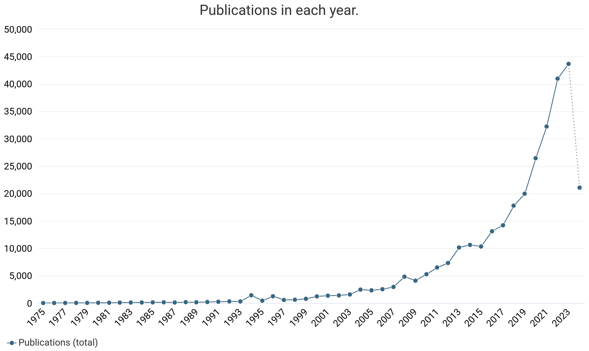

Motivation
In 2009, Rockström et al. proposed the concept of planetary boundaries, or a safe operating space for human society beyond which human development is no longer sustainable and threatens the stability of the Earth system. If these boundaries are transgressed, then Earth may enter a new geological era, the Anthropocene, which would be unprecedented in human history and may challenge humans’ survival. The planetary boundary model has undergone several iterations since its initial proposal. As of 2023, the thresholds for 9 planetary boundaries have been quantified: climate change, biosphere integrity, land system change, freshwater change, biogeochemical flows, ocean acidification, atmospheric aerosol loading, stratospheric ozone depletion, and novel entities. According to this most recent model, 6 of the 9 planetary boundaries have been transgressed.

To mitigate the potential shift into the Anthropocene era, the planetary boundary model needs to be further refined, and actionable steps need to be identified. In alignment with this goal, this research will focus on the novel entities planetary boundary, which is among the six transgressed boundaries. Novel entities include novel chemicals, synthetic organisms, and materials or life forms altered or mobilized by human activity. Such entities undergo rapid development. Consequently, novel entities remain difficult to quantify and regulate globally.
Pharmaceuticals are no exception. On average, the U.S. Food & Drug Administration (FDA) approves a new pharmaceutical within 8.7 years of initial investigation
In contrast, regulation of chemical contaminants under the U.S. Safe Drinking Water Act often takes 25 years or longer. For example, the first lawsuit to regulate carcinogenic per- and poly-fluoroalkyl substances, also known as PFAS or forever chemicals, was initiated in 1998, but PFAS were not regulated in drinking water until April 2024. Unlike PFAS, pharmaceuticals are beneficial to human health and should continue to undergo rapid development to assist in treating new or previously untreatable diseases. However, when pharmaceuticals enter the environment, they become contaminants, and striking a balance between rapid drug development and environmental management proves to be a challenge. Pharmaceuticals primarily enter the environment through residential and non-residential wastewater and agricultural runoff, mostly affecting organisms living in impacted surface waters and riparian organisms within the same food web. In these non-target organisms, pharmaceuticals have demonstrated ecotoxicological effects such as increased cancer rates and physiological and reproductive dysfunction. In addition to the broad ecotoxicity of pharmaceuticals, releasing antimicrobial drugs into the environment drives antimicrobial resistance, which has been identified as one of the greatest public health challenges of the next century. If trends continue, there will be as many global deaths from microbial infection as from cancer by 2050.
If advanced wastewater treatment technology is available, most pharmaceuticals should be sufficiently removed from wastewater. However, many small and low-income communities have access to conventional and/or decentralized wastewater treatment only and may lack wastewater treatment altogether, especially in low-income countries. This means that the people living in these communities as well as the ecosystems associated with them are experiencing contamination due to pharmaceuticals. If the community uses surface water as a drinking water source, then their drinking water may be contaminated with a complex mixture of pharmaceuticals. While these pharmaceuticals are present at low levels, they are designed to be bioactive at such levels and therefore may cause physiological effects. Furthermore, the mixture effects of pharmaceuticals on human health have not been well-studied and may lead to adverse health outcomes. Pharmaceutical mixtures pose additional challenges beyond the existing infrastructure by complicating water reuse. Because of climate change, many communities in dry regions of the world are experiencing water scarcity. When surface water is not drying up entirely, much of the surface water flow is derived from wastewater discharge, a phenomenon known as de facto water reuse. Intentional water reuse provides a potential solution to water scarcity, but contaminants like pharmaceuticals are resistant to degradation and make water reuse more challenging and expensive to implement. To support access to clean water globally, low-cost strategies for removing contaminants like pharmaceuticals are needed.
Background
Pharmaceuticals in wastewater have been widely studied, with over 310,000 publications in the literature since 1975.
More recently, researchers have begun using prescription data to estimate the consumption and the predicted environmental concentration of different pharmaceuticals. Predicting pharmaceutical concentrations in wastewater is helpful for both environmental risk assessment and treatment optimization. Such models can identify pharmaceuticals likely to pass through wastewater treatment or exceed toxicity levels, which can inform treatment prioritization. They can also assist in environmental justice efforts by locating sites that might require additional monitoring for pharmaceutical contamination without requiring expensive chemical analysis. Finally, they can be used to determine what treatment strategies are most successful at removing different pharmaceuticals, potentially informing more effective treatment trains. Despite these benefits, predictive pharmaceutical occurrence models remain largely undeployed in the United States. While these models have been utilized in other countries, there is significant regional variation in pharmaceutical regulations, access, and consumption patterns between countries and so generalization is not possible [9, 23]. Furthermore, pharmaceutical occurrence can be influenced by many factors including prescription cost and insurance coverage, demographics, over-the-counter and other non-prescription sources, and chemical reactions and partitioning processes (e.g., sorbing to sewer sediments) in the sewer system. The existing models do not account for these processes.
The goal of this research is to develop a holistic model that includes more of the factors influencing pharmaceutical occurrence in the United States. To this end, the SeweRx app is being developed. SeweRx is an R Shiny app with two modules: PharmUse and PharmFlush.

PharmUse is a database that synthesizes information on 290 pharmaceuticals from multiple public datasets. Currently, PharmUse contains data from the 2020 U.S. Agency for Healthcare Research & Quality Medical Expenditure Panel Survey (MEPS), the U.S. Environmental Protection Agency CompTox Chemicals Dashboard v2.2.0, and the 2017, 2021, and 2023 U.S. Food & Drug Administration Established Pharmacologic Class Text Phrase Listing. Data includes daily mass load per pharmaceutical, number of prescriptions per pharmaceutical, duration of prescription, and the identifiers (SMILES, InChI string, InChIKey), physicochemical properties, measured toxicity values, and pharmacologic class associated with each pharmaceutical. While multiple toxicity measurements were available, the Lethal Concentration 50 (concentration that kills 50% of test subjects) was used for acute toxicity and the No Observed Effect Concentration (highest concentration at which no adverse health outcomes occur) was used for chronic toxicity. The current PharmFlush model employs a binomial probability mass function to determine the most likely number of prescriptions in a sewershed (i.e., community served by a wastewater treatment plant) of a given size on any given day. Next, PharmFlush computes the expected daily mass load and concentration in wastewater influent (i.e., flow into the wastewater treatment plant) for each pharmaceutical, where concentration depends on flow dilution from residential and non-residential buildings. Finally, PharmFlush randomly draws from the binomial distribution for each pharmaceutical 100 times. Averaging the results of these simulations introduces additional variability into the expected concentrations to simulate the variability in pharmaceutical consumption over time.
Currently, PharmFlush’s predictions are based solely on the likelihood of prescription, assuming a non-compliance rate of 50% for prescription completion. The value of this current form of PharmFlush is that it provides a baseline against which to compare experimental measurements and provides clues as to what processes might be relevant to predict a given pharmaceutical’s concentration. If a pharmaceutical’s concentration is overpredicted, then there are additional degradation or removal processes occurring for which PharmFlush is not accounting (such as chemical reactions in the sewer network). Conversely, if a pharmaceutical’s concentration is underpredicted, then there are additional sources of that pharmaceutical entering the wastewater (such as from veterinary medicine or over-the-counter use). It is also possible that some pharmaceutical concentrations are driven mostly by consumption, with other processes being negligible in comparison. For such pharmaceuticals, PharmFlush should perform well. To evaluate how well PharmFlush is performing in its current state, a systematic literature search was conducted. The literature search included experimental pharmaceutical concentration measurements in wastewater influent in the United States in literature published between 2019 and 2024. The resulting dataset is derived from 34 papers (selected from 399 papers) with 1224 recorded measurements and coverage for over 80 pharmaceuticals. Notably, the literature search will be updated to provide increased coverage for model validation prior to data analysis. Since this research is ongoing, results from the analysis described above will be summarized in future iterations of this project.
Objectives
In its current form, PharmFlush is a baseline model. New data must be integrated into the model to make it more holistic and accurate. Data sources for this integration include the MEPS survey for years 2012-2019 and 2021-2022, Medicaid.gov Pharmacy Pricing, and Medicare Spending by Drug. Data on veterinary prescriptions, over-the-counter prescriptions, commonly abused prescription drugs, and drug administration route are forthcoming. This project encompasses 10 objectives for improving SeweRx’s performance against the experimental data collected in the literature search. Broadly, this project seeks to determine how social and behavioral factors influence pharmaceutical concentration predictions and how pharmaceutical concentrations may change over time with changes in consumption patterns.
- 1. How do veterinary prescriptions affect predicted pharmaceutical concentrations?
- 2. How do over-the-counter prescriptions affect predicted pharmaceutical concentrations?
- 3. How does abuse of prescription medication affect predicted pharmaceutical concentrations?
- 4. How do cost and prescription insurance coverage affect pharmaceutical concentration?
- 5. How does drug administration route influence pharmaceutical concentration?
- 6. How have prescriptions for different pharmaceuticals changed over time between 2012 and 2022?
- 7. How might changes in pharmaceutical consumption over time affect predicted pharmaceutical concentrations?
- 8. How have antimicrobial prescriptions changed between 2012 and 2022?
- 9. How did prescription pharmaceutical usage change during the COVID-19 pandemic?
- 10. How might social and scientific shifts in response to events like antimicrobial resistance and pandemics influence pharmaceutical concentration predictions?